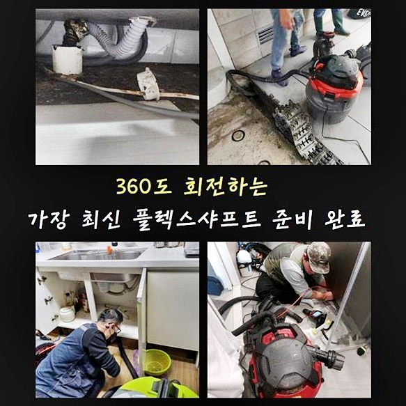
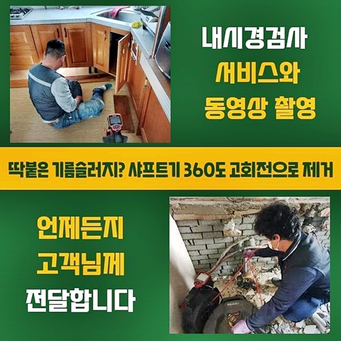
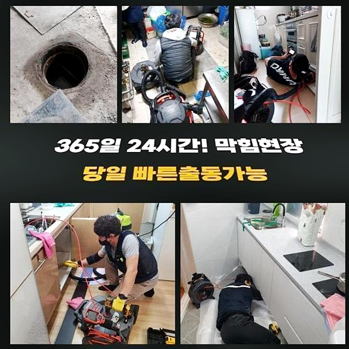
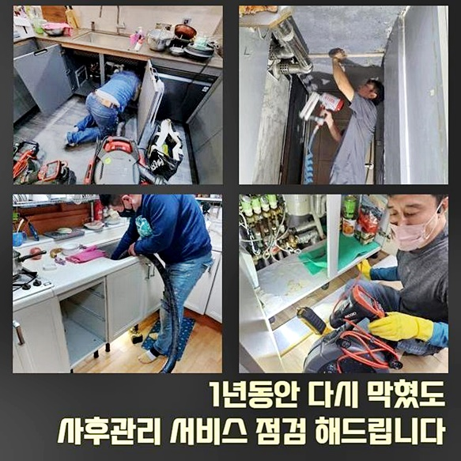
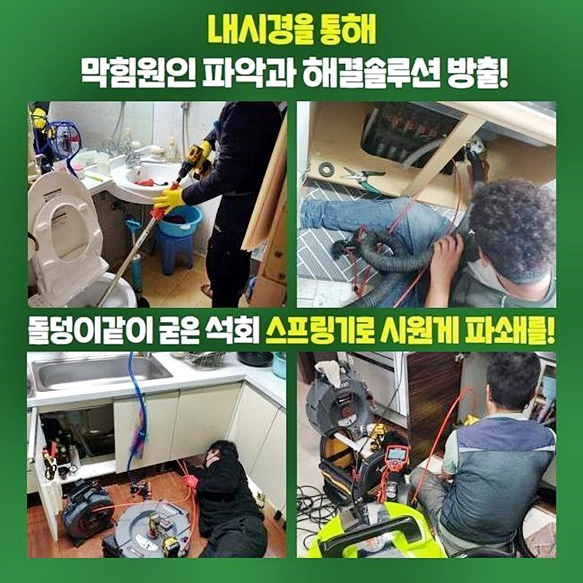
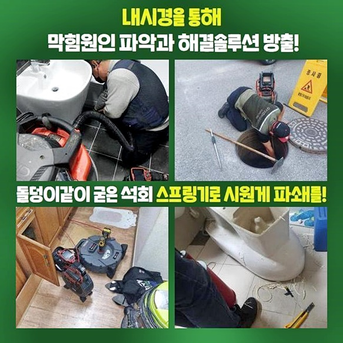
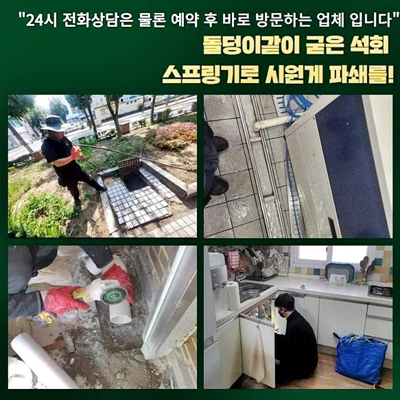

🏠 수원 금곡동하수구역류 권선동 하수관고압세척 설비
수원 싱크대막힘 전문 시공 후기

📋 작업 개요
- 위치: 수원
- 서비스 유형: 싱크대막힘, 하수구막힘, 배관막힘, 역류해결, 뚫는업체, 배관청소, 고압세척
- 작업 일시: 2024. 8. 11. 17:03
- 업체명: 하수구수사대 (010-5615-2118)
🔍 문제 상황
수원 금곡동하수구역류 권선동 하수관고압세척 설비
배관이 막히게되었을때 어떤대처로 취하는게좋을지 작업사례를 통하여 알려드리려고하니 자세하게 살피시면 도움이될겁니다
근래들어 작업했었던 현장사례로 씽크대쪽에서 배관막힘현상이 발현된경우가 있었죠
이런경우 대부분은 기름기가 쌓여서 막혀버리게되는데 저흰 배관속을 꼼꼼히조사해 정확하게 원인이무엇인지 살피고 해결해드린답니다
현장을살펴보니 좋지않은 냄새도 발생했으며 물을이용하는것도 어려웠답니다
이런상황은 메인관에 이물들이 퇴적되어 물이정상적으로 흘러가지않는것으로 보였답니다
막힘증세에있어 빠르게 해결해드리기위해 최선을다한 작업으로 착수하고있죠
깔끔한 배관청소로 배관을 뚫어드리고 의뢰자분의 불편했던점들을 해소해드릴게요
고압청소장비는 고압의 물을사용해 이물을 제거시키기에 깔끔한 배관청소가 가능하겠습니다
오염물질의 양이상당한 하수관을 깔끔히 청소할때 활용하고있는데 이기계는 하수구청소시 정체증상을 처리하는데 효과적이랍니다
세척과정이 진행될때 주변에이물이 튀지않도록 큰비닐을 보존하여 피해를 예방하고있죠
전문성을통해서 하수구성능이 문제가없게끔 만들어내고 안전한상태로 운행될수있게 기여해내고있어요
배관의경우 각자다른 위치로 설치되어있지만 이어져있으므로 배관막힘이 많이일어납니다

🔎 원인 분석
💡 전문가 진단: 정밀 진단 장비를 사용하여 슬러지의 고착 여부를 판명하고 타격/세척 작업을 실시했습니다.
배관입구쪽을 살펴봤더니 머리카락과 기름때들이 퇴적된상태임을 살펴볼수있었죠
이럴때는 하수구카메라를 써서 확실하게 점검해봐야해요
공용관은 하수구통로가 어느정도의 확보가되어 있었지만 공간이부족해 배수상태에 피해를끼치고 있었네요
전체적으로 점검해본결과 간단히 잔해물을 제거시키는 기계보단 고압청소기가 효과를볼수있다고 예상이가능했죠
고객분에게 동의를얻고 빠르게 스케일링을 시작할수가 있었는데요
하수구cctv를 투입하여 배관안속을 세심하게 파악할수있어요
이물로인해서 배관이막히면 이물제거작업이 필수적이에요
그치만 스케일링은 잘못진행한다면 하수구안속에 파손이일어나고 결국에는 심각한경우로 이어질수가있죠
저희업체에서는 경력이풍부하신 전문기사들이 현장을 방문하여 점검을 진행하고있으니 손상문제로 인한 걱정하실 필요없답니다
석션장비의경우 잔해물을빨아올려 제거해내는 역할을맡고있죠
이를통하여 내부속에있는 잔여물질들을 빨아올려 문제의증상을 살필수있답니다
샤프트기는 오염물을 부수어 제거시키고있고 주로 고착물질들을 분쇄시키는데 사용되고있죠
그후에는 내시경점검으로 하수구안쪽을 살핀후 적절한대처를 진행하면됩니다

🔧 작업 과정
배관카메라로 배관속을 살피는단계는 막힌이유에 대하여 파악하고자 필요한단계에요
내시경검수결과 막힌까닭이 잔해물질들이 배관안에 퇴적되어 막히게되었다는걸 살필수가있었죠
내시경장비끝에 작은촬영기가 설치되어있기에 두눈으로 살필수없는 안속지점에 투입하여 확인하고있죠
막혀있는지점과 이물의특징을 확실히 살필수가있어요
점검과정을 통해서 어떻게 작업할지에 대한 도움을준답니다
그렇기에 막히는현상이 일어나게되었다면 내시경도구를 써서 자세하게 검사하는것이 중요한거랍니다
이물을없애고자 최첨단기기를 준비해서 하수구이물을 제거하려고합니다
다시한번 알려드리지만 샤프트장비노즐 끝쪽에 달려있는사슬이 배관을회전하며 하수구안의 석회들을 분쇄해준답니다
저희업체는 수립계획들을 사전에 분명히 고지드려 의뢰인께서 수리방법의 필요성들을 헤아리고 신뢰가가도록 성심성의껏 진행하고있답니다
하수구작업에 착수하게될때 기술자가 아닐경우 오히려하수구에 손상문제를 일으킬수있기에 과도하게 셀프조치를 하는것은 삼가주시는게 좋습니다
전문가에게 맡기시면 별걱정없이 풍부한 현장경험을 토대로 문제를타파하면 2차피해가 일어날일이 없도록 해결될거에요
두번째장소는 욕실배수구가 막혀버린 현장에내방했죠
이번현장도 오염물질들로 인해서 막혀버리게한 현장이었어요
고착물을 분쇄해주는 샤프트설비를 이용하기로 결정하고 작업에임했죠
악취현상도 보였으므로 하수구물길을 확보하여 진행하고자했어요
신속정확한 수리가진행될것을 고대할수있었죠
오랫동안 축적되어진 이물들이 하수구아래쪽에 고이게되면서 막히게된것을 살필수있었네요
여러번 말했지만 전문기술이 없을경우 어떠한 이유로인해 막혀버린것인지 알아내기어려워요
이렇다보니 저희들과같은 기술자의 지원을 받으셔야 하는것이죠
신속정확히 하수구를뚫어 쾌적한하수구로 제공해드릴것을 약속할게요
같은현상으로 이어지지않게 예방을하는 방법까지도 진행해보겠습니다


✅ 작업 완료
고객분의 편리함을 가장우선으로 두는 작업으로 진행할게요!
깨끗한 배관으로 유지해드리고자 성심성의껏 작업할게요
문제를방치하면 2차문제로 발발될수있으니 막힘징조가 나타나게되었을때 대처하시는것이 좋겠습니다
어떤곳이라도 60분안쪽으로 도착이가능하고 하수구전용 장비들까지 다양하게 가지고있으니 언제라도 전화만주시면 되겠습니다
이밖으로도 해소되지못한게 있다고하신다면 마음편안히 연락주시면 친절하고 세세하게 응대해볼게요!
앞으로일어날 막힘문제 저희들과함께 헤쳐나가봐요!




⚠️ 주방 싱크대 배관 막힘 예방 수칙
- ✅ 기름기가 묻은 식기나 프라이팬은 설거지 전 키친타올로 반드시 기름때를 닦아내세요.
- ✅ 주기적으로 싱크대 개수대에 뜨거운 물을 가득 받아 한 번에 내려 배관 내부 기름을 씻어내세요.
- ✅ 배수구 거름망을 미세한 필터로 사용하시고 음식물 찌꺼기가 틈으로 새어 들지 않게 관리하세요.
- ✅ 베이킹소다와 식초를 뜨거운 물과 함께 일주일에 한 번씩 부어주면 배관 살균과 막힘 예방에 좋습니다.
💡 핵심 정리
- 확실한 장비 작업(내시경 점검 및 샤프트 스케일링)으로 원인을 뿌리 뽑습니다.
- 작업 후 1년 이내에 동일한 부위 재발 시 100% 무상 A/S 서비스를 보장합니다.
- 서울 · 경기 · 인천 전 지역에 24시간 언제든 긴급 출동할 수 있도록 항시 대기 중입니다.
❓ 자주 묻는 질문 (FAQ)
🚨 수원 싱크대막힘 문제로 고민이신가요?
정확한 원인 진단과 확실한 시공으로 재발 없는 해결을 약속드립니다.
24시간 긴급 출동 | 서울 · 경기 · 인천 전지역 | 1년 내 재발 시 무상 A/S